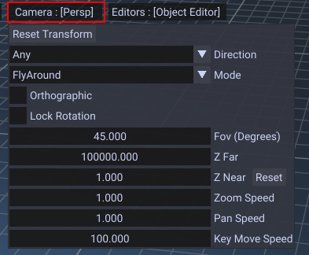
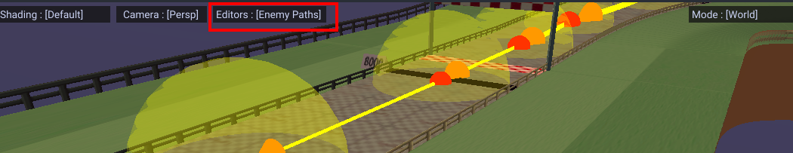
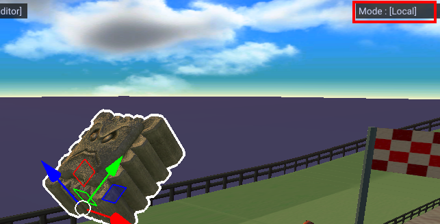
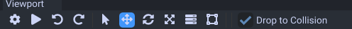

Viewer
Viewport

Camera
- WASD to move forward/back/left/right.
- Spacebar to move up.
- Spacebar + Ctrl to move down.
- Scroll wheel to scroll.
Tips
- Hold shift to move faster
- Ctrl + left click to zoom while dragging mouse.
- 1, 2, 3 to switch translation, rotation and scale gizmo.
Settings

- FOV changes the field of view.
- Z Far changes the far distance of the camera.
- Z Near changes the near distance of the camera.
- Zoom speed controls speed of scrolling.
- Pan speed is panning speed for inspect camera.
- Key move speed is WASD move speed.
Shading

This mode allows you to view with different shading. This can help find issues with the model or lighting.
Editors

This switches what editor to use. Object editor, enemy paths, item paths, rails, lap paths, etc.
Modes

Determines what space to perform transforming. World space is default, local space makes it relative to the object.
Toolbar

In order left to right.
- Settings for transforming objects in the viewer.
- Play button for playing animations.
- Undo
- Redo
- Selection mode. Creates a selection box during mouse click.
- Use translation gizmo.
- Use rotation gizmo.
- Use scale gizmo.
- Use multi gizmo (all 3 gizmos combined).
- Use rectangle gizmo which can scale boxes.
The Drop to Collision setting will make placed objects snap to your maps collision.
Any extra options will show based on your current editor.